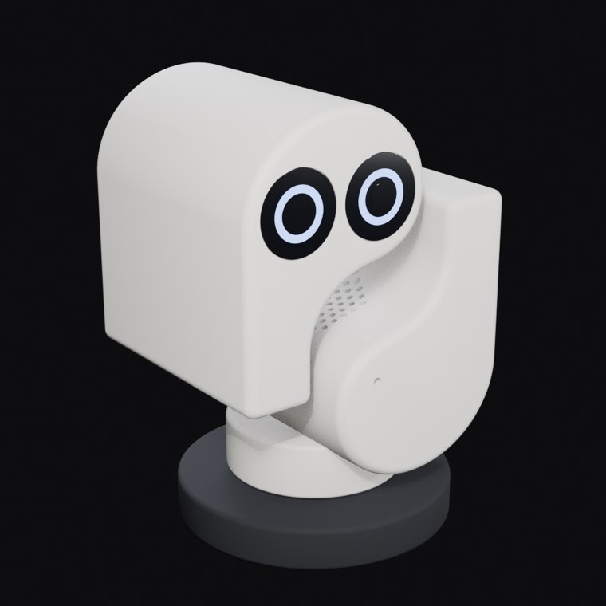

I'm 16. I build brains for machines. J'ai 16 ans. Je construis des cerveaux pour les machines.
Klein My desk robot, 16 cm tall. Drawn, not built yet. It follows your cursor. Mon robot de bureau, 16 cm de haut. Dessiné, pas encore construit. Il suit ton curseur.
Six printed parts.Six pièces imprimées.
A language model first, now a neuron on a chip. The goal is a small brain that a robot like this one can carry on a battery. D'abord un modèle de langue, maintenant un neurone sur une puce. Le but : un petit cerveau qu'un robot comme celui-ci peut porter sur batterie.
What I'm buildingCe que je construis
-
Vertigo 3
PublicPublicA small language model that answers in French. 98 MB, runs in a browser tab, shows its source. Un petit modèle de langue qui répond en français. 98 Mo, il tourne dans un onglet de navigateur et montre sa source.
Try it in your browserL'essayer dans le navigateur, read the codelire le code
-
Vertigo 4
The next version, four times larger, learning to hold a conversation and to write code. La version suivante, quatre fois plus grande, qui apprend à tenir une conversation et à écrire du code.
In trainingEn entraînement -
NeuronNeurone
DesignedDessinéOne spiking neuron in Verilog, on a Tiny Tapeout tile, through Hack Club's chip program. The design passes every check. Un neurone à impulsions en Verilog, sur une tuile Tiny Tapeout, avec le programme de puces de Hack Club. Le dessin passe toutes les vérifications.
Read how it worksLire comment il marche, see the chip in 3Dvoir la puce en 3D, read the codelire le code
-
Klein
The desk robot at the top of this page. It will carry the brain. Le robot de bureau en haut de cette page. Il portera le cerveau.
Drawn, not builtDessiné, pas construit
One neuron, liveUn neurone, en direct
This is the neuron I'm building for a real chip. Each pulse adds to its potential. It leaks a little all the time, and it fires when it passes the threshold. Voici le neurone que je construis pour une vraie puce. Chaque signal s'ajoute à son potentiel. Il fuit un peu en permanence, et il s'active quand il dépasse le seuil.
Verilog is the first language I learned to write by hand. This block is the part that adds up. Le Verilog est le premier langage que j'ai appris à écrire à la main. Ce bloc est la partie qui additionne.
module accumule ( input wire clk, input wire rst, input wire entree, input wire [5:0] poids, output reg [7:0] potentiel ); always @(posedge clk) begin if (rst) potentiel <= 0; else if (entree) potentiel <= potentiel + poids; end endmodule
How I got hereComment j'en suis arrivé là
- Age 13À 13 ans
- First small websites, then my own game.Premiers petits sites web, puis mon propre jeu.
- September 2026Septembre 2026
- Started an AI project with a friend I met online.Début d'un projet d'IA avec un ami rencontré en ligne.
- October 2026Octobre 2026
- First models trained at home, on a gaming PC.Premiers modèles entraînés chez moi, sur un PC de jeu.
- November 2026Novembre 2026
- Vertigo 3 goes public. First lines of Verilog, then a first neuron drawn for a real chip.Vertigo 3 devient public. Premières lignes de Verilog, puis un premier neurone dessiné pour une vraie puce.
- NextEnsuite
- Test the neuron on a real board. Build Klein. Then a network of neurons.Tester le neurone sur une vraie carte. Construire Klein. Puis un réseau de neurones.
- Based inOù
- Touraine, France
- SchoolÉcole
- 10th grade, remoteSeconde, à distance
- LanguagesLangues
- French, EnglishFrançais, anglais
- HardwareMatériel
- One gaming PC and free cloud GPUsUn PC de jeu et des GPU gratuits dans le cloud
- Learning nowJ'apprends
- Neuroscience, chip design, roboticsLes neurosciences, la conception de puces, la robotique